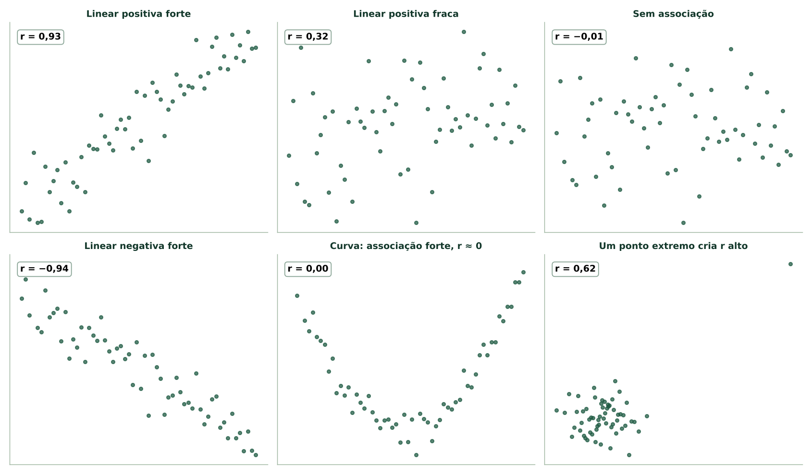
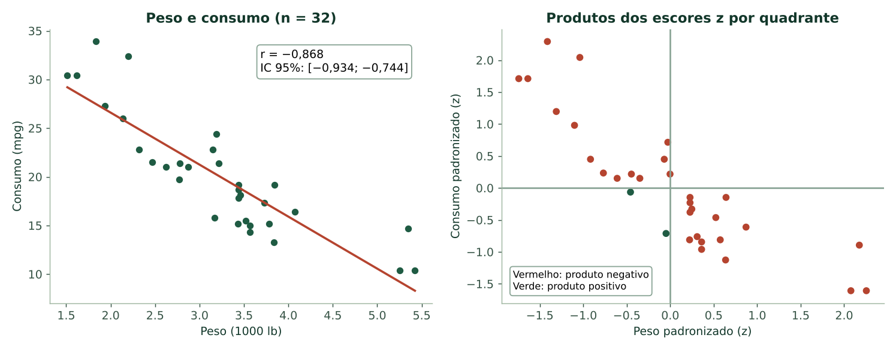

Correlação de Pearson
Mede a força e o sentido da associação linear entre duas variáveis quantitativas.
Comece por aqui
Carros mais pesados gastam mais combustível? Alunos que estudam mais horas tiram notas maiores? Perguntas assim tratam da associação entre duas medidas quantitativas. O coeficiente de correlação de Pearson resume, em um número entre −1 e 1, o quanto os pontos de um gráfico de dispersão se alinham em torno de uma reta.
A ideia de correlação nasceu com Francis Galton, ao estudar a altura de pais e filhos na década de 1880. Karl Pearson deu a ela, em 1896, a formulação matemática usada até hoje, razão pela qual o coeficiente é chamado de “momento-produto de Pearson”.
O que é o coeficiente
O coeficiente \(r\) mede a força e o sentido da relação linear entre duas variáveis quantitativas. O sinal indica o sentido (positivo: crescem juntas; negativo: uma cresce enquanto a outra diminui) e o valor absoluto indica o quanto os pontos se aproximam de uma reta.

Duas variáveis podem estar correlacionadas porque uma causa a outra, porque ambas dependem de uma terceira (variável de confusão) ou por coincidência. O coeficiente, sozinho, não distingue esses casos.
Pressupostos e como verificá-los
| Pressuposto | Necessário para | Como verificar |
|---|---|---|
| Duas variáveis quantitativas medidas nas mesmas unidades | Calcular r | Estrutura dos dados: um par (x, y) por unidade. |
| Relação aproximadamente linear | r representar bem a associação | Gráfico de dispersão. |
| Ausência de valores extremos influentes | r não ser dominado por poucos pontos | Gráfico de dispersão; recalcular sem o ponto suspeito. |
| Pares independentes entre si | Teste e IC | Delineamento (não usar várias medidas da mesma unidade como se fossem unidades distintas). |
| Normalidade bivariada | Teste t e IC exatos em amostras pequenas | Q–Q de cada variável, Shapiro–Wilk e dispersão em formato elíptico. Com n grande, o teste é robusto. |
| Variabilidade semelhante ao longo da reta | IC e teste | Dispersão sem formato de funil. |
Hipóteses e estatística de teste
Em que:
- \(r\)
- coeficiente de correlação amostral
- \(\rho\)
- coeficiente de correlação populacional (parâmetro)
- \(x_i,\ y_i\)
- valores das duas variáveis na unidade i
- \(\bar x,\ \bar y\)
- médias amostrais
- \(S_{xy}\)
- soma dos produtos dos desvios
- \(S_{xx},\ S_{yy}\)
- somas de quadrados dos desvios de x e de y
- \(n\)
- número de pares
- \(t\)
- estatística de teste, com \(n-2\) graus de liberdade sob \(H_0\)
Exemplo numérico, passo a passo (n = 5)
Pares (x; y): (1; 2), (2; 4), (3; 5), (4; 4) e (5; 5). As médias são \(\bar x=3\) e \(\bar y=4\).
| i | x | y | x − média | y − média | Produto | (x − média)² | (y − média)² |
|---|---|---|---|---|---|---|---|
| 1 | 1 | 2 | −2 | −2 | 4 | 4 | 4 |
| 2 | 2 | 4 | −1 | 0 | 0 | 1 | 0 |
| 3 | 3 | 5 | 0 | 1 | 0 | 0 | 1 |
| 4 | 4 | 4 | 1 | 0 | 0 | 1 | 0 |
| 5 | 5 | 5 | 2 | 1 | 2 | 4 | 1 |
| Soma | 6 | 10 | 6 |
\(r=\dfrac{6}{\sqrt{10\times6}}=\dfrac{6}{7{,}746}=0{,}775\).
\(t=0{,}775\sqrt{\dfrac{3}{1-0{,}600}}=2{,}121\), com 3 g.l. ⇒ \(p=0{,}124\).
A correlação amostral é alta, mas com apenas cinco pares não há evidência suficiente de associação na população.
Intervalo de confiança: transformação z de Fisher
\(z=\operatorname{arctanh}(-0{,}8677)=-1{,}3235\) e \(EP=1/\sqrt{29}=0{,}1857\).
Limites em z: \(-1{,}3235\pm1{,}96\times0{,}1857\Rightarrow[-1{,}6875;\ -0{,}9595]\).
Voltando à escala de r: \([\tanh(-1{,}6875);\ \tanh(-0{,}9595)]=[-0{,}934;\ -0{,}744]\).
Propriedades
- \(-1\leq r\leq1\); \(|r|=1\) apenas quando todos os pontos estão sobre uma reta.
- Não tem unidade e não muda quando se troca a unidade de medida de x ou de y (por exemplo, libras por quilogramas).
- É simétrico: a correlação entre x e y é igual à correlação entre y e x.
- \(r^2\) é a proporção da variabilidade de uma variável explicada linearmente pela outra (coeficiente de determinação da regressão linear simples).
- É sensível a valores extremos e mede apenas associação linear.
- O intervalo de confiança não é simétrico em torno de r, porque r é limitado entre −1 e 1.
Como interpretar os resultados
| Elemento | O que informa | Cuidado |
|---|---|---|
| Sinal de r | Sentido da associação. | |
| |r| | Proximidade dos pontos a uma reta. | Não informa a inclinação da reta. |
| Valor-p | Evidência contra ρ = 0. | Com n grande, correlações minúsculas ficam “significativas”. |
| Intervalo de confiança | Valores de ρ compatíveis com os dados. | É a melhor forma de comunicar a precisão. |
| r² | Fração da variabilidade compartilhada. | r = 0,5 corresponde a apenas 25%. |
| Valor | Descrição convencional | Observação |
|---|---|---|
| 0,10 | Associação pequena | Pode ser relevante em fenômenos com muitas causas. |
| 0,30 | Associação moderada | |
| 0,50 ou mais | Associação grande | Em calibração de instrumentos, exige-se muito mais (acima de 0,99). |
Esses pontos de referência (COHEN, 1988) são convenções das ciências do comportamento. A interpretação depende sempre da área e do objetivo.
Reporte r, o intervalo de confiança, n e o valor-p, por exemplo: “r = −0,87; IC 95% [−0,93; −0,74]; n = 32; p < 0,001”.
Como executar no R e em Python
Onde executar o código em Python
Não é preciso instalar nada: o Google Colab é um computador na nuvem, gratuito, que executa Python pelo navegador e já traz as bibliotecas usadas aqui (numpy, scipy e matplotlib).
cor() calcula o coeficiente e cor.test() acrescenta o teste de hipóteses e o intervalo de confiança. Ambas pertencem ao pacote stats, já instalado com o R.
cor(mtcars$wt, mtcars$mpg)
cor.test(mtcars$wt, mtcars$mpg)
Exemplo de aplicação
Contexto dos dados
No conjunto mtcars, wt é o peso do automóvel (em milhares de libras) e mpg é o consumo (milhas por galão: quanto maior, mais econômico). Queremos medir a associação linear entre peso e consumo.
Código em R
# Correlação de Pearson: exemplo completo ----
# Pacote: apenas o stats (já vem com o R). Dados: mtcars.
# 1. Dados: peso (wt, em 1000 libras) e consumo (mpg) de 32 automóveis
x <- mtcars$wt
y <- mtcars$mpg
n <- length(x)
# 2. Gráfico de dispersão (sempre antes do coeficiente)
plot(x, y, pch = 19, xlab = "Peso (1000 lb)", ylab = "Consumo (mpg)")
abline(lm(y ~ x), col = "red", lwd = 2)
# 3. Correlação de Pearson, teste de hipóteses e intervalo de confiança de 95%
resultado <- cor.test(x, y, method = "pearson", conf.level = 0.95)
print(resultado)
# 4. Cálculo pela definição
Sxy <- sum((x - mean(x)) * (y - mean(y)))
Sxx <- sum((x - mean(x))^2); Syy <- sum((y - mean(y))^2)
r <- Sxy / sqrt(Sxx * Syy)
t <- r * sqrt((n - 2) / (1 - r^2))
c(r = r, t = t, r2 = r^2)
# 5. Intervalo de confiança pela transformação z de Fisher
z <- atanh(r); ep <- 1 / sqrt(n - 3)
tanh(z + c(-1, 1) * qnorm(0.975) * ep)
# 6. Normalidade das duas variáveis (para o teste e o IC)
shapiro.test(x)
shapiro.test(y)
A mesma análise em Python, com os resultados
Cole o código em um notebook do Google Colab ↗ e execute com Shift+Enter. Os valores abaixo são a saída desse código.
# Bibliotecas: numpy, scipy e matplotlib (já instaladas no Google Colab)
import numpy as np
from scipy import stats
import matplotlib.pyplot as plt
# Dados do conjunto mtcars: peso (wt, em 1000 libras) e consumo (mpg)
wt = np.array([2.62, 2.875, 2.32, 3.215, 3.44, 3.46, 3.57, 3.19, 3.15, 3.44, 3.44, 4.07, 3.73, 3.78, 5.25, 5.424, 5.345, 2.2, 1.615, 1.835, 2.465, 3.52, 3.435, 3.84, 3.845, 1.935, 2.14, 1.513, 3.17, 2.77, 3.57, 2.78])
mpg = np.array([21, 21, 22.8, 21.4, 18.7, 18.1, 14.3, 24.4, 22.8, 19.2, 17.8, 16.4, 17.3, 15.2, 10.4, 10.4, 14.7, 32.4, 30.4, 33.9, 21.5, 15.5, 15.2, 13.3, 19.2, 27.3, 26, 30.4, 15.8, 19.7, 15, 21.4])
n = len(wt)
# 1. Gráfico de dispersão (sempre antes do coeficiente)
plt.scatter(wt, mpg); b, a = np.polyfit(wt, mpg, 1)
plt.plot(np.sort(wt), a + b * np.sort(wt), color="red")
plt.xlabel("Peso (1000 lb)"); plt.ylabel("Consumo (mpg)"); plt.show()
# 2. Correlação de Pearson e teste de hipóteses
res = stats.pearsonr(wt, mpg)
r = res.statistic
t = r * np.sqrt((n - 2) / (1 - r**2))
print(f"r = {r:.5f} | t = {t:.4f}, gl = {n - 2}, p-valor = {res.pvalue:.3e}")
# 3. Intervalo de confiança de 95% (transformação z de Fisher)
z = np.arctanh(r); ep = 1 / np.sqrt(n - 3); zc = stats.norm.ppf(0.975)
ic = np.tanh([z - zc * ep, z + zc * ep])
print(f"z de Fisher = {z:.4f} | erro-padrão = {ep:.4f} | IC 95% = [{ic[0]:.4f}; {ic[1]:.4f}]")
print(f"r² = {r**2:.4f}")
# 4. Cálculo pela definição
sxy = np.sum((wt - wt.mean()) * (mpg - mpg.mean()))
sxx = np.sum((wt - wt.mean())**2); syy = np.sum((mpg - mpg.mean())**2)
print(f"Sxy = {sxy:.4f} | Sxx = {sxx:.4f} | Syy = {syy:.4f} | r = {sxy / np.sqrt(sxx * syy):.5f}")
# 5. Normalidade das duas variáveis (para o teste e o IC)
for nome, v in [("wt", wt), ("mpg", mpg)]:
W, pw = stats.shapiro(v)
print(f"Shapiro-Wilk ({nome}): W = {W:.4f}, p-valor = {pw:.4f}")
# 6. Exemplo do texto (n = 5)
x = np.array([1, 2, 3, 4, 5.]); y = np.array([2, 4, 5, 4, 5.])
r5 = stats.pearsonr(x, y)
print(f"\nn = 5: r = {r5.statistic:.4f}, t = {r5.statistic*np.sqrt(3/(1-r5.statistic**2)):.4f}, p-valor = {r5.pvalue:.4f}")
Resultados da execução
r = -0.86766 | t = -9.5590, gl = 30, p-valor = 1.294e-10 z de Fisher = -1.3235 | erro-padrão = 0.1857 | IC 95% = [-0.9338; -0.7441] r² = 0.7528 Sxy = -158.6172 | Sxx = 29.6787 | Syy = 1126.0472 | r = -0.86766 Shapiro-Wilk (wt): W = 0.9433, p-valor = 0.0927 Shapiro-Wilk (mpg): W = 0.9476, p-valor = 0.1229 n = 5: r = 0.7746, t = 2.1213, p-valor = 0.1240

| Elemento | Valor | Leitura |
|---|---|---|
| r | −0,868 | Associação linear negativa e forte. |
| t (30 g.l.) | −9,559 | Valor-p = 1,3 × 10⁻¹⁰. |
| IC 95% para ρ | [−0,934; −0,744] | Mesmo o limite mais fraco indica associação forte. |
| r² | 0,753 | Cerca de 75% da variabilidade do consumo acompanha linearmente o peso. |
| Shapiro–Wilk (wt; mpg) | p = 0,093; p = 0,123 | Sem evidência contra a normalidade das duas variáveis. |
Leitura: carros mais pesados tendem a percorrer menos milhas por galão. A associação é forte e estimada com boa precisão. Observe no gráfico uma leve curvatura (os carros mais leves ficam acima da reta): vale comparar com a correlação de Spearman. E lembre-se de que os dados são observacionais: carros pesados também têm motores maiores, de modo que o peso não é, necessariamente, a única causa do consumo.
Erros comuns
| Erro | Como evitar |
|---|---|
| Calcular r sem olhar o gráfico | Faça sempre o diagrama de dispersão (ANSCOMBE, 1973). |
| Interpretar correlação como causalidade | Considere variáveis de confusão e o delineamento do estudo. |
| Concluir “não há relação” porque r ≈ 0 | Pode haver relação não linear. |
| Confundir significância com força | Reporte r e o IC, não apenas o valor-p. |
| Extrapolar para fora da faixa observada | A relação pode mudar fora dos valores estudados. |
| Restringir a amplitude de uma variável | Amostras com pouca variação em x reduzem r artificialmente. |
| Correlacionar médias de grupos e concluir sobre indivíduos | É a falácia ecológica: a correlação entre médias costuma ser maior. |
Alternativas e fluxo de trabalho
| Procedimento | Quando preferir |
|---|---|
| Spearman | Relação monotônica não linear, valores extremos ou dados ordinais. |
| Tau de Kendall | Amostras pequenas e muitos empates; interpretação em termos de pares. |
| Ponto-bisserial | Uma das variáveis é binária. |
| Correlação parcial | Deseja-se descontar o efeito de uma terceira variável. |
| Regressão linear simples | Interessa prever y ou quantificar a variação de y por unidade de x. |
| IC por bootstrap | Normalidade bivariada duvidosa. |
- Faça o diagrama de dispersão.
- Verifique linearidade e valores extremos.
- Calcule r com o intervalo de confiança.
- Interprete magnitude e precisão no contexto do problema.
- Se a relação for monotônica mas não linear, use Spearman ou Kendall.
Referências desta ficha
- PEARSON, Karl. Mathematical contributions to the theory of evolution. III. Regression, heredity, and panmixia. Philosophical Transactions of the Royal Society of London. Series A, v. 187, p. 253-318, 1896.
- FISHER, Ronald A. Frequency distribution of the values of the correlation coefficient in samples from an indefinitely large population. Biometrika, v. 10, n. 4, p. 507-521, 1915.
- ANSCOMBE, Francis J. Graphs in statistical analysis. The American Statistician, v. 27, n. 1, p. 17-21, 1973.
- COHEN, Jacob. Statistical power analysis for the behavioral sciences. 2. ed. Hillsdale: Lawrence Erlbaum, 1988.
- MORETTIN, Pedro Alberto; BUSSAB, Wilton de Oliveira. Estatística básica. 9. ed. São Paulo: Saraiva, 2017.
- HENDERSON, Harold V.; VELLEMAN, Paul F. Building multiple regression models interactively. Biometrics, v. 37, n. 2, p. 391-411, 1981. (Conjunto de dados
mtcars, pacotedatasetsdo R.) - R CORE TEAM. R: a language and environment for statistical computing. Vienna: R Foundation for Statistical Computing, 2026. Disponível em: https://www.r-project.org/. (Funções
corecor.test, pacotestats.) - POSIT TEAM. RStudio: integrated development environment for R. Boston: Posit Software, PBC. Disponível em: https://posit.co/download/rstudio-desktop/.
- VIRTANEN, Pauli et al. SciPy 1.0: fundamental algorithms for scientific computing in Python. Nature Methods, v. 17, p. 261-272, 2020. DOI: 10.1038/s41592-019-0686-2. (Funções do módulo
scipy.stats.) - HARRIS, Charles R. et al. Array programming with NumPy. Nature, v. 585, p. 357-362, 2020. DOI: 10.1038/s41586-020-2649-2.
- HUNTER, John D. Matplotlib: a 2D graphics environment. Computing in Science & Engineering, v. 9, n. 3, p. 90-95, 2007.
- GOOGLE. Google Colaboratory. Disponível em: https://colab.research.google.com/.
- As figuras desta ficha foram elaboradas pelo autor.

Prof. Dr. Cássius Henrique Xavier Oliveira
Professor · ICTIN/UFLA · Estatística, Confiabilidade e Ciência de Dados.
Conheça minha trajetória e projetos →